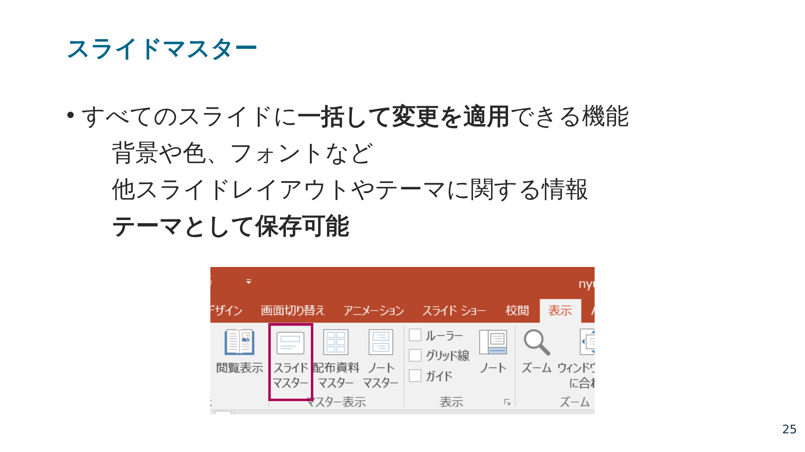
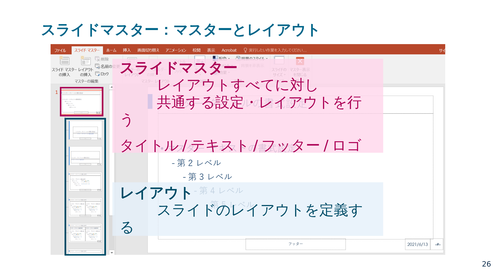
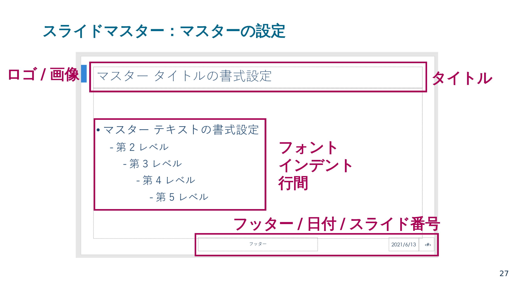
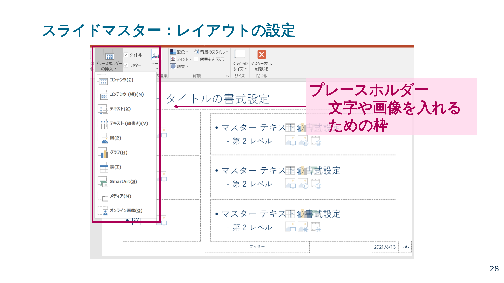
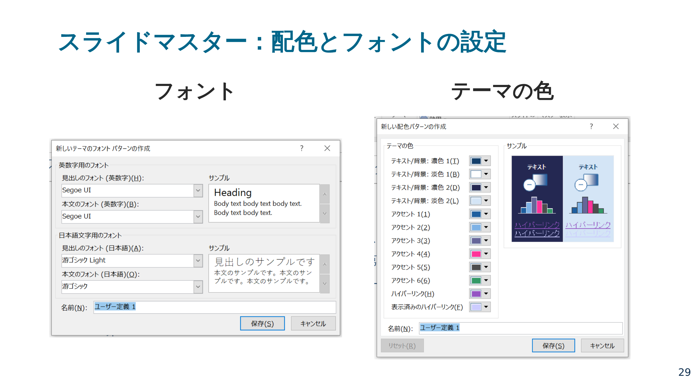
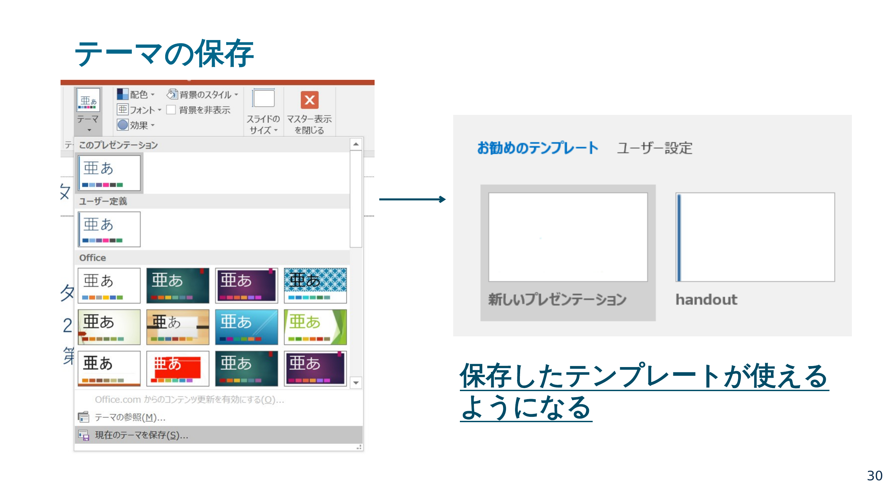

発表
研究報告に向けて、良いプレゼンの作り方、スライドの構成、発表前の確認、評価のポイントをまとめています。研究報告のたびに見返してください。
01良いプレゼンとは — コンテンツ
プレゼンテーションの目的は、伝えたいメッセージを聞き手に理解してもらうことです。聞き手の負担を減らし、主張に納得してもらうことが大切です。
分かりやすいプレゼンとは
- メッセージが的確に伝わる
- 分かりやすく丁寧な言葉
- 聞き取りやすい声・話のスピード
- 分かりやすい論理構成（話の流れ）
聞き手が「難しい」「引っかかる」と感じる部分がないかを意識します。
ワンスライド・ワンメッセージ
1枚のスライドに情報を詰め込みすぎると見づらくなります。1スライドにつき伝えるメッセージは1つに絞ります。
✕ 情報が多くて見づらい
結果の解釈
保育所整備率が高い地域ほど、女性就業率も高い傾向が見られた。
都道府県別パネルデータを用いた分析の結果、両者の間には統計的に有意な正の相関が確認された。
都市部よりも地方の方が、この相関がやや強く出ている。
都市部と地方を分けて推定したところ、地方のサンプルで係数がより大きく、整備の効果がより顕著に表れている。
ただし産業構造など他の交絡要因は十分に統制できていない。
本分析では地域の産業構造や所得水準といった要因を十分に統制できておらず、因果関係の解釈には注意が必要である。
〇 情報が少なくて見やすい
結果の解釈
保育所整備率が高い地域ほど、女性就業率も高い傾向が見られた。
都道府県別パネルデータを用いた分析の結果、両者の間には統計的に有意な正の相関が確認された。
02良いプレゼンとは — レイアウト
同じ内容でも、レイアウト次第で伝わりやすさが大きく変わります。以下の原則を意識します。
伝わるスライドの5原則
ビジュアル化の原則
- 影・グラデーションは取り除き、矢印は目立たせない
- よく分からない図形は極力使わない
- 枠が目立ちすぎないようにする、楕円は多用しない
- 色や形はシンプルに、統一感をもたせる
- 見えない線をそろえ、関連する要素はグループにまとめる
表・グラフの原則
- Excel や論文の表をそのまま貼らない
- 余分な要素（不要な罫線・目盛）は取り除く
- 凡例はグラフの近くに大きく置く
- データの示し方に強弱をつける（強調したい部分をサイズ・色で目立たせる）
- 数値はできれば整数に、軸目盛は少なく
〇 良い表の例
| 地域 |
子育て支援満足度（%） |
| A市 | 82 |
| B市 | 45 |
| C市 | 38 |
- 項目見出しは濃いめの色にし、文字は白抜きにする
- 細い境界線を入れてもよい
- 強調したい部分はサイズ・色を変える
〇 良いグラフの例
- 数値はできれば整数にする
- 軸目盛は少なくする
- 強調したい項目だけ色を変える
フォント・レイアウトの原則
- 視認性の高いゴシック体を使う（明朝体は投影時に細線が飛びやすいため、スクリーン投影では避ける）
- 推奨はBIZ UDPゴシック（ユニバーサルデザインフォント。Windows 10 以降に標準搭載。英数字や似た文字が判別しやすく、太さの段階も豊富）。定番の游ゴシック・メイリオも可
- 游ゴシックを使う場合は、細字だと投影時に見えにくいため、太さを「Medium」または「Bold」に指定する
- 英数字（欧文）は Segoe UI・Calibri・Helvetica Neue など
- 文字の大きさは24pt以上にする
- ニセ太字・ニセ斜体を使わない（MS ゴシック・MS 明朝・Century は太字/斜体に非対応）
- 左揃え または 両端揃えにする
- 行間・文字間隔を読みやすく調整する
色遣いの原則
- 1つの色には1つの意味をもたせる
- 背景色を含めて合計4色までに抑える
- 原色は使わない（少し彩度を落とす）
- 色のみに頼らない（色覚の多様性に配慮する）
- ユニバーサルな配色：暖色と寒色を組み合わせ、明度に差をつける
ユニバーサルな配色
暖色と寒色を合わせる
暖色系と寒色系の中性色を合わせる
明度に差をつける
配色の分量の目安
背景（ベース）・メインカラー・アクセントカラーは、7:2.5:0.5程度の分量を目安にします。
背景 70%
メイン 25%
アクセント 5%
03報告スライドの構成
研究報告のスライドを作る際は、報告スライド・テンプレートの項目と流れを参考にしてください。このテンプレートは、研究の流れがそのままスライドの流れになるよう構成されています。必ずこのとおりにする必要はありませんが、何をどの順で示すかの目安になります。
1
タイトル（タイトル・グループ名・メンバー・発表日）
2
研究背景（なぜこのテーマが重要か。設定した問いの重要性を示す）
4
先行研究（このテーマで何が知られているか、先行研究の課題、自分たちが見るべき問い）
5
データ（出典・特徴・期間・サンプルサイズ・使用した変数）
6
分析方法（変数の定義、回帰式、推定方法。X と Y は何か、どう確かめるか）
7
結果（推定結果の表・グラフ。伝えたいメッセージが端的に伝わる表現に）
8
まとめ（やったこと（問い・分析方法）のおさらいと結果の解釈）
9
限界と今後の課題（明らかにできなかったことと、その要因）
参考：報告スライド・テンプレート（.pptx）
04発表前チェックリスト
資料を共有する前や報告の前に、以下を確認してから報告に臨んでください。
スライドのチェック
内容
このスライドで一番伝えたいことは明確か
ワンスライド・ワンメッセージになっているか
事実と意見を区別できているか
結論に至る流れが分かるか
見た目
フォントサイズは24pt以上あるか
色は多すぎないか（背景を含めて4色まで）
図表や文章は整列しているか
不要な線や装飾を削除したか
表や図をそのまま貼っただけになっていないか
図表
何を見てほしい図か分かるか
凡例やラベルは読みやすいか
不要な情報を入れすぎていないか
強調したい部分が分かるか
発表のチェック
最初に問いやテーマを明確に言えているか
結果を読み上げるだけになっていないか
最後に何が分かったかを簡潔に言えるか
結論を言いすぎていないか
05評価されるポイント
研究報告は、以下の観点で評価されます。事前に確認しておいてください。
発表
- 声の大きさ・明瞭さ（聞き取りやすいか。重要な箇所で話し方を変えるなどの工夫があるか）
- 態度（聴衆の方を見て話しているか。聴衆を巻き込む工夫があるか）
- 役割分担（全員が役割を果たしているか。※グループでの発表の場合）
- 発表時間（時間内に収まっているか）
研究内容
- テーマ設定・RQ の明確さ（社会的に重要なテーマか。RQ が具体的かつ明確か）
- データと分析方法の適切さ（RQ に対応するデータと分析方法が選ばれているか）
- 結果の解釈の慎重さ（相関と因果の違いを意識しているか。言えること・言えないことを区別しているか）
- 先行研究との接続（先行研究を踏まえた研究の位置づけが示されているか）
- 主張と根拠の整合性（主張と根拠に整合性があるか）
提示資料（スライド）
- 分かりやすさ（発表内容と整合し、見やすいか）
- 図表の利用方法（データが適切に図表化され、効果的に使われているか）
- 出所の明示（データ・図表・参考文献が適切に明記されているか）
▼ PowerPoint Tips — スライドマスターの使い方など
スライドマスターを使うと、全スライドに共通の設定（背景・色・フォント・ロゴなど）を一括で適用でき、テーマとして保存もできます。以下の操作を知っておくと、統一感のあるスライドを効率よく作れます。
スライドマスターとは

全スライドに一括して変更を適用できる機能。背景や色、フォントなどをテーマとして保存できる
マスターとレイアウトの関係

スライドマスターはレイアウトすべてに共通する設定（タイトル・テキスト・フッター・ロゴ）を行い、レイアウトはスライドごとの配置を定義する
マスターの設定

タイトル・フッター（日付・スライド番号）・ロゴ画像・フォント・インデント・行間などを設定する
レイアウトの設定

プレースホルダー（文字や画像を入れるための枠）を設定する
配色とフォントの設定

テーマの色とフォントをまとめて設定する
テーマの保存

保存したテーマは、以後の資料でテンプレートとして使えるようになる